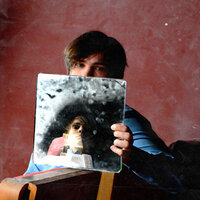

Lida (Николай)
Lida (Николай Ромадов, 10 мая 1995) — российский видеоблогер, музыкант, автор песен, вокалист и продюсер группы “Фрио”. Родной город — Москва (Марьино). Свою музыкальную деятельность начал в феврале 2014 года, выпустив композицию “Мысли” под псевдонимом “Фрио”. В декабре этого же года данная песня набрала более двух тысяч добавлений во Вконтакте и спустя три года, в изменённой аранжировке, вошла в дебютный релиз — альбом “Послевкусие”. last.fm
БИЛЕТ НА КОНЦЕРТВК ЕГО ТЕЛЕГРАММ ЕГО ТРЕКИ НА ЯНДЕКС МУЗЫКЕ МЕРЧ
mzlff (Илья)
Mzlff (Коряков Илья Иванович, родился 28 апреля 1999 года) — российский музыкальный исполнитель и стример из Москвы. Карьеру музыканта артист начал в 2018 году, а стал известен широкой аудитории в 2021 году после выпуска сингла «Я помню», который стал мемом и завирусился в ТикТоке.
БИЛЕТ НА КОНЦЕРТВК ЕГО ТЕЛЕГРАММ ЕГО ТРЕКИ НА ЯНДЕКС МУЗЫКЕ МЕРЧ
Слава КПСС (Вячеслав)
Слава КПСС (Вячеслав Машнов, родился 9 мая 1990 года) — музыкант, битмейкер, русский рэп-исполнитель родом из Хабаровска, проживающий на данный момент в Санкт-Петербурге, победитель первого сезона #SLOVOSPB. Сооснователь объединения АНТИХАЙП. Участник группы Ежемесячные.
БИЛЕТ НА КОНЦЕРТ ВК ЕГО ТЕЛЕГРАММ ЕГО ТРЕКИ НА ЯНДЕКС МУЗЫКЕ МЕРЧ
ПОЛМАТЕРИ (Иван)
Полматери» – молодежная рок-группа, образованная в Екатеринбурге в 2019 году. За три года студийной работы уже выпущен один альбом, четыре EP (студийный музыкальный альбом, который содержит меньше композиций, чем полноценный) и множество синглов. Ребята нашли признание у подростковой аудитории и в сентябре этого года совершили свой первый тур по городам России, в число которых вошли Пермь, Челябинск, Екатеринбург.
БИЛЕТ НА КОНЦЕРТВК ЕГО ТЕЛЕГРАММ ЕГО ТРЕКИ НА ЯНДЕКС МУЗЫКЕ МЕРЧ
DK (Даниил)
Данила Владимирович Кашин (родился 6 ноября 1996 года), также известный как DK, - российский видеоблогер, рэп-исполнитель и EDM-продюсер. На своих каналах YouTube он публикует видеоролики музыкальных пародий и авторских видеоклипов.
БИЛЕТ НА КОНЦЕРТВК ЕГО ТЕЛЕГРАММ ЕГО ТРЕКИ НА ЯНДЕКС МУЗЫКЕ МЕРЧ